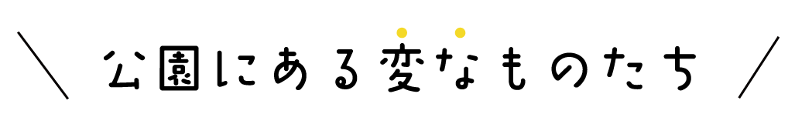

さぁ、
心も体もHAPPYになる
旅に出かけよう！
美しい景観や自然と触れ合える体験、願いを叶えるパワースポット、
疲れを癒す風景に、ここでしか食べられないグルメ•••
新宿には、公園で楽しみたい魅力的なスポットが
ギュッと詰まっています！
心も体もHAPPYになる
フォトジュニックなスポットをめぐり、元気をチャージ！
さぁハピジュニックな公園の旅に出かけよう！
新宿御苑は新宿駅南口から徒歩10分ほどの場所に位置する日本には数少ない近代西洋庭園です。園内には日本庭園をはじめ、整形式庭園や風景式庭園がデザインされており、日本有数の近代西洋庭園を見ることが出来ます。「本当に東京なの？」と思わせるほど豊かな自然が広がっています。まさに都会のオアシス！
迎賓館前広場かと思いきや、新宿区の公園です！四ツ谷駅方面から続く並木路と合わせて紅葉の時期は特にフォトジェニックです。公園内にある休憩所はとてもお洒落できれいな無料休憩所です。喫茶もあって、迎賓館見学の疲れを癒すのに最高の場所です！
漱石山房記念館に併設されている公園。小規模ですが、一休みするのにはお勧め。 あまり人が訪れることが多くはありませんが、近所の子供連れがお散歩ついでに寄り道する姿を見ます。 記念館にはカフェがあり、漱石縁のお菓子と、美味しいお茶が頂けます。
新宿御苑入口
記念品
抹茶ソフトクリーム
温室のサボテン
御苑内花壇
御苑内樹木
みたらしソフト
中の池
中央休憩所
卵サンド
迎賓館
若葉公園中央休憩所
中央通り
漱石公園石板
夏目漱石記念像
漱石公園入口
漱石書籍
漱石書斎
漱石公園記念品